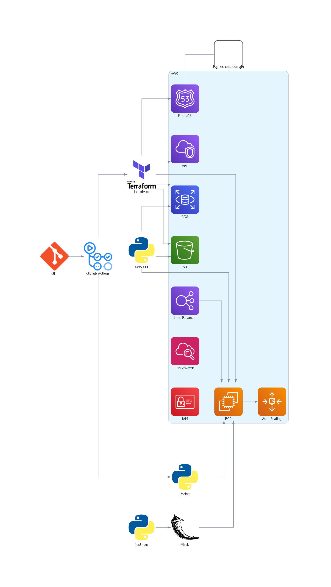
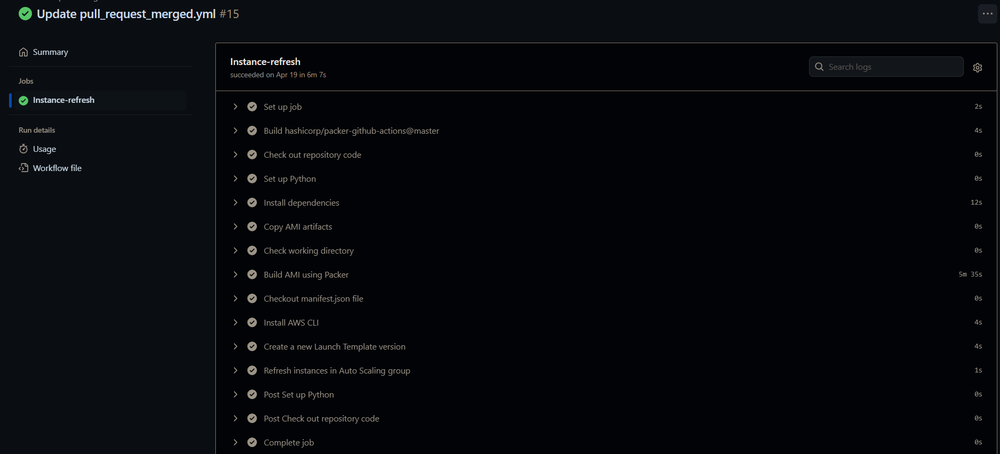
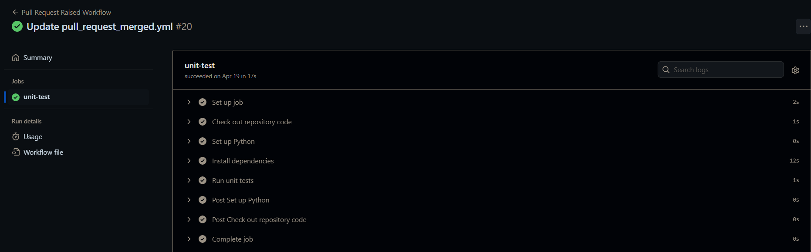

Cloud native web app using Flask and Terraform
This project is about developing and deploying a Flask-based REST API backend app using AWS services (EC2, S3, RDS, VPC, Route53). The project involved utilizing GIT for version control, GitHub Actions for CI/CD, Terraform for infrastructure as code, and Packer for creating Amazon Machine Images.
  - Flask - was used to create a RESTful API that provides access to the app's data and functionality.
- Terraform - was used to define and manage the AWS infrastructure required to run the app, including EC2 instances, S3 buckets, RDS databases, VPCs, and Route53 DNS records.
- Packer - was used to build custom Amazon Machine Images (AMIs) that include all the dependencies and configuration required to run the app on EC2 instances.
- AWS CLI, Zsh - AWS CLI and Zsh were used to interact with the AWS APIs and automate the deployment of the app to EC2 instances.
- Postman - was used to test the app's RESTful API and ensure that it returns the expected results.
- Jmeter - was used to perform load testing on the app and measure its performance under heavy load.
- unittest - was used to write and run unit tests for the app's code to ensure that it works as expected.
- GitHub Actions - was used to automate the build, test, and deployment of the app whenever changes were pushed to the repository.
- GIT - was used to track changes to the app's code and collaborate with other developers.
- statsd - was used to collect and log metrics from app, such as request rates, response times, and error rates.
- boto3 - was used to interact with S3 buckets from Python code and store/retrieve data from S3.
- bcrypt - was used to securely hash user passwords and authenticate users when they log in to the app.
- sqlalchemy - was used to define the app's database schema and bootstrap the database with initial data.
- VS Code - was used as the primary code editor for developing the app's code.
- PostgreSQL - was used as the initial database for storing the app's data. Later migrated to RDS.
Details
Overview
The project involved the following technologies: